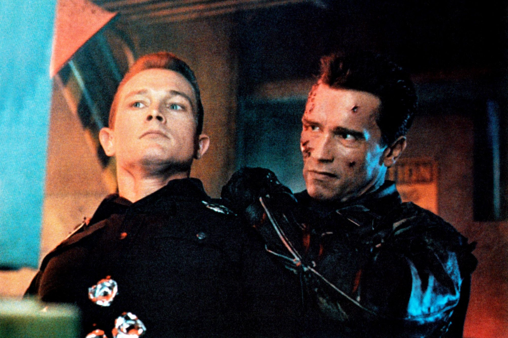

1.Edge of Tomorrow
Edge of Tomorrow is the perfect cocktail—a dash of Tom Cruise action, a sprinkle of Emily Blunt strength, a swirl of writer Christopher McQuarrie’s unique sensibilities, and a heavy helping of director Doug Liman’s wild ambition
2.About Time
About Time is certainly the most emotional entry on this list. Writer/director Richard Curtis had previously melted hearts with Love Actually and Pirate Radio, but About Time brought the filmmaker back to his Four Weddings and a Funeral roots (which he didn’t direct, but he did write). The time-travel genre offers the opportunity to wax philosophical about death and regret, and About Time seizes it in a unique way by focusing on a very earnest relationship between a father and a son. The romantic comedy portion between Domhnall Gleeson and Rachel McAdams is the hook, but the relationship between time-traveling father and son Gleeson and Bill Nighy is this film’s tearjerking heart.
3.Terminator 2-Judgment Day

We should have known, given Aliens and The Abyss, that director James Cameron’s Terminator 2 wouldn’t just be any old sequel. Indeed, the ambitious filmmaker made a very different movie than the original Terminator, weaving in shades of a buddy comedy, PTSD drama, and family story into this sci-fi actioner. Terminator 2 is a minor miracle of a film, turning its own premise on its head to present a time-travel story that’s similar to the first Terminator, but different in key ways. It also feels positively epic